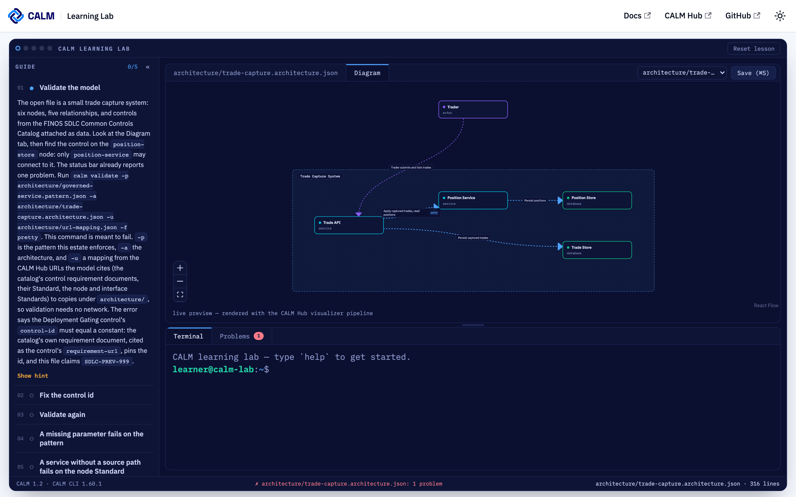
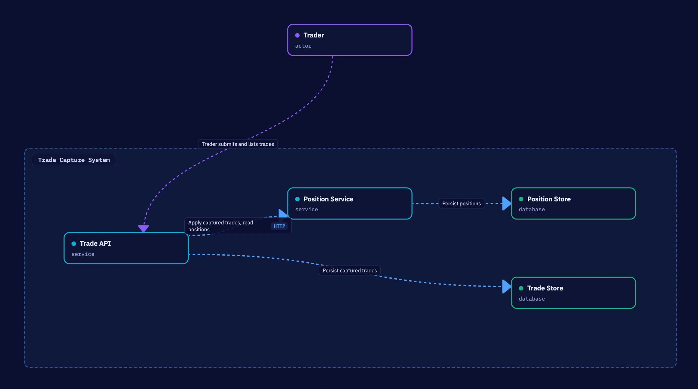
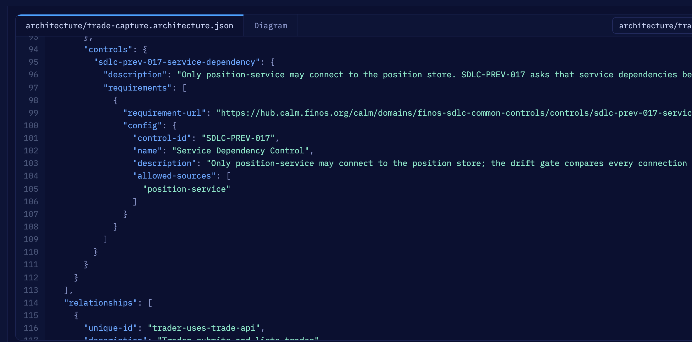
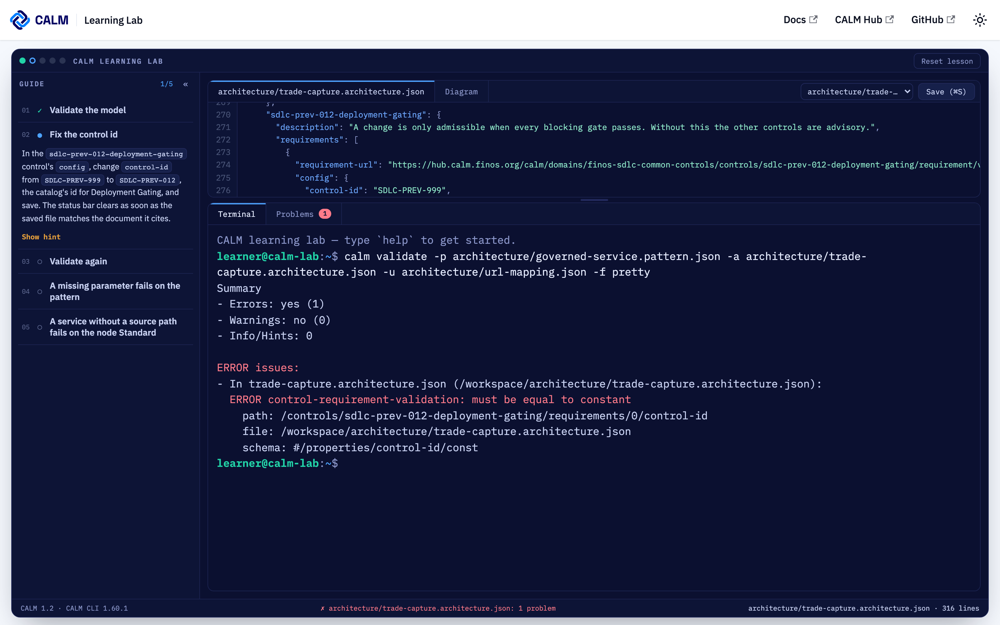
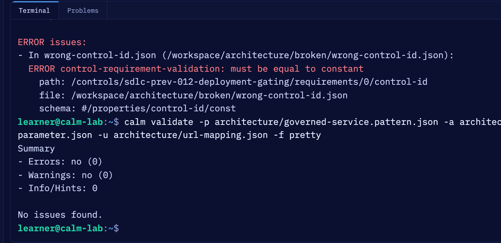
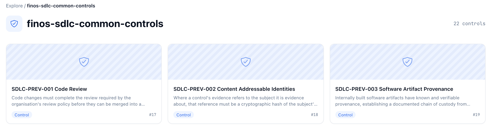

Built by a FINOS working group. Every control maps to NIST SP 800-53r5 and, where relevant, EU DORA, NIST SSDF and SLSA.
The pieces already exist, in FINOS
An agent needs the rules as context. A pipeline needs them as checks. Prose controls give neither. Three projects together do.
says what the controls are
22 mitigations for 11 risks, mapped to the regulations an examiner will ask about. The what, not the how.
makes them checkable
The architecture as data a tool can validate, with the catalog's controls attached to the parts they govern. The same file is the agent's context and the pipeline's check.
governs the agent itself
Mitigations for the AI, already published as a controls domain on CALM Hub, so the agent's own guardrails live in the same model.
CALM in six terms
node
a component: a service, a database, an actor
relationship
connects one node to another, through an interface
interface
what a node exposes; an env-binding names the setting that holds its address
control
a requirement attached to a node or the whole system: a requirement-url and a config
pattern
what every architecture of this kind must carry: which controls, which parameters, which Standards
Standard
a schema that says what a node, an interface or a control requirement document must look like
Node metadata used later: criticality tier (1 is the most critical) and data classification (internal or confidential).
Two ways to run the workshop
Everything from here on is a step you can repeat. Two environments carry it.
In the browser: the CALM Learning Lab

The real CALM command-line tool in a browser: an editor, a live diagram, a terminal.
Two guided lessons with hints. Nothing to install.
Station 1, and half of station 4.
In the repository: the blueprint
git clone github.com/rocketstack-matt/agentic-sdlc-blueprint
cd agentic-sdlc-blueprint
npm install
npm run gates
Node 22 and git. No API key, under five minutes.
Five labs, one per station; the agent's attempts are patches.
All five stations: agent, gates and evidence included.
Station 1 of 5. Learning Lab lesson agentic-sdlc-model, or Lab 1
Model: what are the rules?
One small system, one rule, and a model that arrives broken.
The system, as the lab draws it
Learning Lab · lesson agentic-sdlc-model

The rule is a control on the node
Learning Lab · lesson agentic-sdlc-model, the editor

Step 1. Validate the model
Learning Lab · lesson agentic-sdlc-model, step 1 of 5

Steps 2 and 3. Fix the id, validate again
Learning Lab · lesson agentic-sdlc-model, steps 2 and 3 of 5

One command, three layers, three owners

Standards say what a node, an interface or a control requirement looks like. The pattern says which of them every architecture here must satisfy. FINOS publishes the controls once; each organisation publishes how it enforces them.
Station 2 of 5. Lab 2
Spec: what are we building, and which parts of the model may it touch?
A requirement that names its scope in the model, and a model that answers back.
How the agent knows where to start
Repository terminal · Lab 2
Ask the model what the spec's scope means
Repository terminal · Lab 2
Station 3 of 5. Lab 3
Agent: the same spec, two attempts
Attempt A gets the spec. Attempt B gets the spec and the model. Both are pre-recorded patches, so nobody needs an API key.
Attempt A: the shortcut
Repository terminal · Lab 3
Attempt A at the gates live
Repository terminal · Lab 3
Attempt B. The same spec, with the model live
Repository terminal · Lab 3
Station 4 of 5. Lab 4; the model-change half also runs in the Learning Lab
Gate: did it stay inside, and who reviews the robot?
Six checks on every change, a review mode the model decides, and an agent that tries to edit the model.
Every change meets six gates
1
calm-validate
the model is valid against CALM, the pattern and the Standards it names
SDLC-PREV-012Deployment Gating
2
spec-check
the change names an approved spec and touches only the nodes it declares
SDLC-PREV-004Requirements Repository
3
drift-check
every connection in the code is in the model, and allowed
SDLC-PREV-004Requirements RepositorySDLC-PREV-017Service Dependency Control
5
tests
the test suite passes
SDLC-PREV-016Test Execution and Sign-OffSDLC-PREV-014Test Evidence Retention
6
review-router
the model decides who must review
SDLC-PREV-001Code Review
All six must pass: that is SDLC-PREV-012 Deployment Gating, and the list of gates itself lives in the model. The model, the gates and the agent instructions are the control plane: a change there always goes to a human.
Steps 1 and 2. Who reviews
Repository terminal · Lab 4
Attempt C: the agent edits the model live
Repository terminal · Lab 4
The right path: a human changes the model under SPEC-002 live
Repository terminal · Lab 4
Then the agent implements inside the new scope live
Repository terminal · Lab 4
Station 5 of 5. Lab 5
Evidence: prove it
One file per change that an examiner can read.
Step 1. Commit, then produce the evidence live
Repository terminal · Lab 5
Step 2. Read the bundle
Repository terminal · Lab 5
Closing
Build it once, together, in the open
What fell out of building this, and where it goes.
Bring it back
Three controls we needed and could not find, and three doors to take them through.
Architecture Conformance. Code admitted to a protected baseline must not introduce connections absent from the approved, machine-readable architecture.
Agent Task Scoping. An agent's change is bound to an approved requirement that declares its architectural scope in advance.
Agent Attribution and Context Provenance. Which agent identity produced a change, under which instructions, with which architectural context.
Drafts to start a conversation, not catalog content. Each already has a working check in the repository.
Controls for the agentic SDLC, and which enforcement parameters belong in the catalog's own documents.
The catalog's Standard and documents, the pattern and the node Standards on CALM Hub, and the two Learning Lab lessons.
Agent mitigations, already a CALM controls domain on CALM Hub.
Make it yours
Fork it, model one of your own systems, and see what the gates say.
Open the lab. Two lessons in the browser, nothing to install, fifteen minutes.
Fork the repo. Node 22, git, npm install. No API key, no cloud account, under five minutes.
Model your own estate. Nodes, connects relationships, source paths. Validate against the pattern.
Wire it into your agent. Keep AGENTS.md, swap the model path. Open a pull request on your fork and read the bundle.
Contribute. Controls to the catalog, modelling gaps to CALM.
The architecture and pattern are published with the site, with docs generated from the model; the catalog's documents, their Standard and the pattern live on CALM Hub.
Thank you
The model is the context, and the same model is the control.
Matthew Bain and Aaron Searle
Appendix
Two real agents, one prompt: "Implement SPEC-001."
unassisted
assisted
Agent instructions and model access
removed
present
Result
conformant
conformant
Read the model first
opened the JSON
MCP context tool
Wall clock
748 s
279 s
Neither drifted. The unassisted agent found and read the gates on its own. The context changed the path, not the destination. One sample each, transcripts in docs/live-runs.